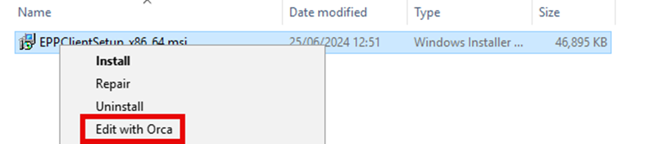
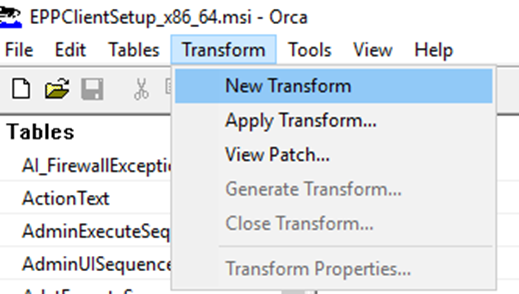
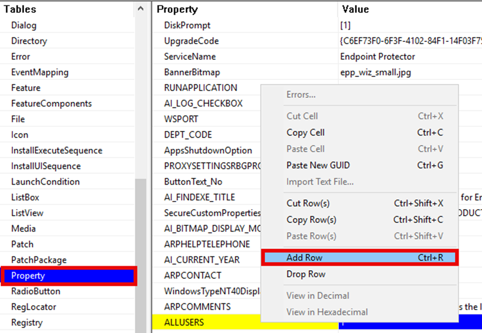
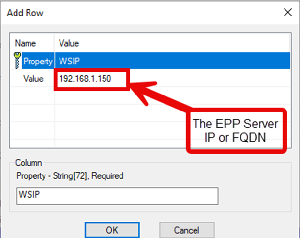
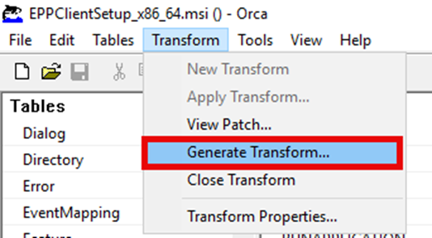
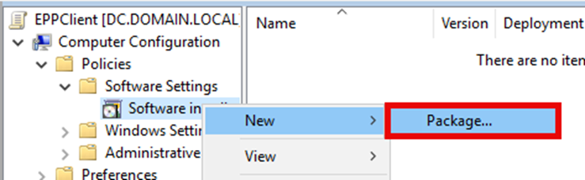
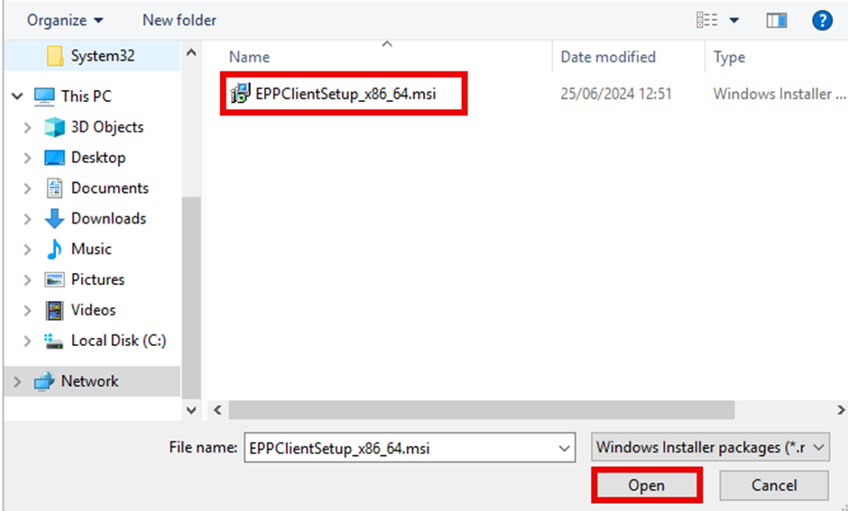
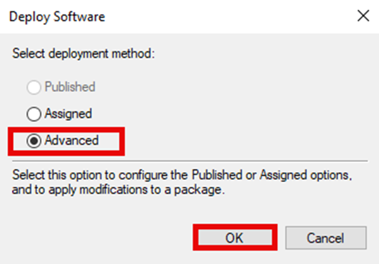
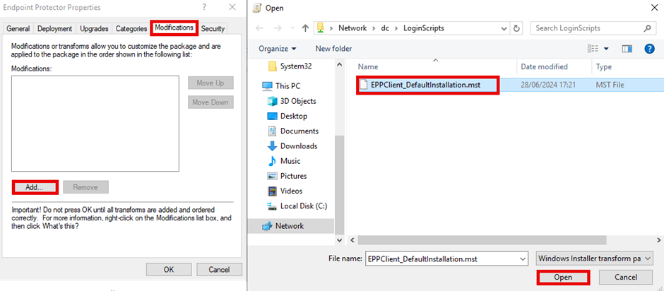
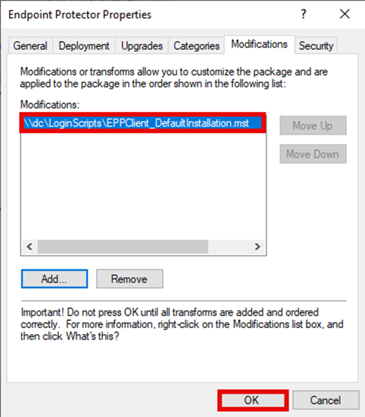

Manual Installation
If installing the Endpoint Protector Agent on a small number of clients or for testing,
the agent can simply be installed by downloading the MSI Package from the Endpoint
Protector Console and executed. When downloaded from the console, the installer will have
a name that follows the below convention, where <VERSION_INFO> is
replaced with the agent version and
<ENDPOINT_PROTECTOR_SERVER_ADDRESS> is replaced with the Endpoint
Protector server IP or URL:
EPPClientSetup.<VERSION_INFO>._x86_64_[a=<ENDPOINT_PROTECTOR_SERVER_ADDRESS>].msi
Example installer:
EPPClientSetup.6.2.2.1006_x86_64_[a=10.0.0.86].msi
Note: This does not apply to the Endpoint Protector Hotfix, as agents were not included in the server patch. To download the agents, please go to the security advisory located at https://security.netwrix.com/Advisories/ADV-2024-002 and download the required agent(s).
Silent Installation
Customers wishing to install the Endpoint Protector Windows agent silently can do so using MSIExec and specifying the options required for their environment.
Examples
In all the below examples, replace EPPClient.msi with the name of the MSI
being used.
Basic Installation
To install the Endpoint Protector Agent with the defaults and the EPP server located at 192.168.1.50, use the following:
msiexec /i "C:\EPPClient.msi" /qn WSIP=192.168.1.50
Installation with Non-Default Department
Use the same as the basic installation and specify your department code using the DEPT_CODE property:
msiexec /i "C:\EPPClient.msi" /qn WSIP=192.168.1.50 DEPT_CODE=depfin
Installation with Agent-Specific Proxy Settings
To install the agent with a proxy that doesn’t require authentication, use the PROXYSETTINGSRBGPROP, PROXYIP, and PROXYPORT options along with the basic installation. The following will set the agent's proxy to 10.0.0.10:8080:
msiexec /i "C:\EPPClient.msi" WSIP=192.168.1.50 PROXYSETTINGSRBGPROP=ManualProxy PROXYIP=10.0.0.10 PROXYPORT=8080
Advanced Installations customers requiring further options should see the Appendix for the full list of properties that can be specified.
Deploying the Agent via Group Policy
Deploying the agent via Group Policy requires editing the MSI either directly or via an MSI transform file to be created and the specific properties updated in the transform. To do this, follow the below instructions:
-
Download the Orca MSI (or your preferred MSI editing software; these instructions will
use Orca).
- Orca can be installed from the Windows SDK and selecting the MSI options.

- Right-click on the EPPClientSetup MSI and select Edit with Orca.

- Click on Transform > New Transform.
-
Add the required properties to the Property Table.
- Find and open the Property table.
- Right click in the table and select Add Row.
- In the popup box, input WSIP as the property, and then add your EPP Server IP Address or FQDN as the value.
- Click Ok.
- Optional: If there are more properties that need changing or adding, such as not using the default department code, refer to the Appendix for the list of properties and change them all in the Properties table.


-
Generate the Transform.
- Click on Transform.
- Click on Generate Transform.
- In the open box, save your transform.
- Ensure the packages are placed on a network share that is accessible to all clients that need to install it.

-
Deploy the MSI with the Transform file via Group Policy.
- Open Group Policy Management Console.
- Find or create a new group policy for the deployment.
- Right click on the group policy object and select Edit…
- Expand Computer Configuration / Policies / Software Settings.
- Right-click Software Installation and Select New > Package.
- Select the Advanced option on the Deploy Software dialog box.
- Browse to the network share where the installer and transform were placed in step 5.
- Select the EPPClientSetup MSI file and click Open.
- In the new window, select the Modifications tab.
- Click Add and browse to your saved transform file on the network share.
- Select the transform file and click Ok.
- Click Ok.





Appendix
A full list of properties that can be specified in the installer can be found in this table.
| Property | Example Values | Description |
|---|---|---|
| WSIP | EPPServer.domain.local | The name or IP address of your Endpoint Protector Server. If this is not specified, then the value of [a=XXX] from the name of the installer is used for new installations. For existing installations, the registry is used. |
| WSPORT | 443 | The port on which the Endpoint Protector Server is listening for agents. Default value: 443 |
| DEPT_CODE | Defdep | The department code to assign the computers. Default value: defep |
| PROXYSETTINGSRBGPROP | SystemProxy | Whether to use the System settings for proxy or to use the agent's own proxy configuration. Default: SystemProxy Allowed values: ManualProxy, SystemProxy |
| PROXYIP | 192.168.1.200 | The IP Address of the proxy server. This is only used when PROXYSETTINGSRBGPROP is set to ManualProxy. |
| PROXYPORT | 8080 | The port to use for the proxy server. This is only used when PROXYSETTINGSRBGPROP is set to ManualProxy. |
| AUTHCHECKBOXPROP | 1 | Enable this to use Authentication on the proxy. Allowed values: 0 (Disabled), 1 (Enabled) |
| AUTHUSER | ProxyUser | The username for the user that will authenticate to the proxy. |
| AUTHPASSWORD | P@ssw0rd123 | The password for the user that will authenticate to the proxy. |
| INSTALL_NOTES_EXT | 1 | Installs the Lotus Notes Add-on. Default value: 1 (Install) Allowed values: 1 (Install), 0 (Don’t install) |
| INSTALL_OUTLOOK_EXT | 1 | Installs the Outlook Add-on. Default value: 1 (Install) Allowed values: 1 (Install), 0 (Don’t install) |